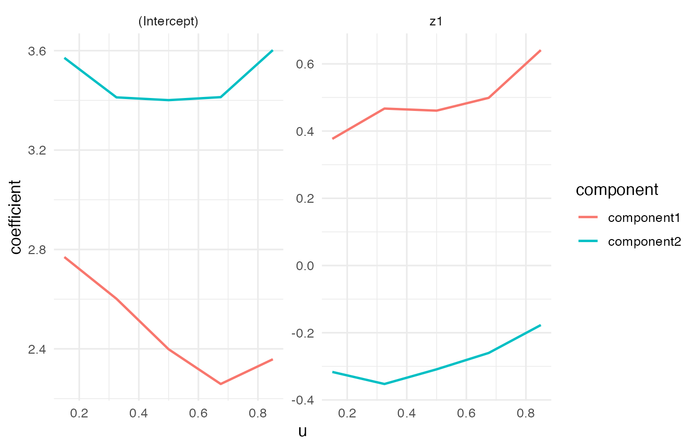
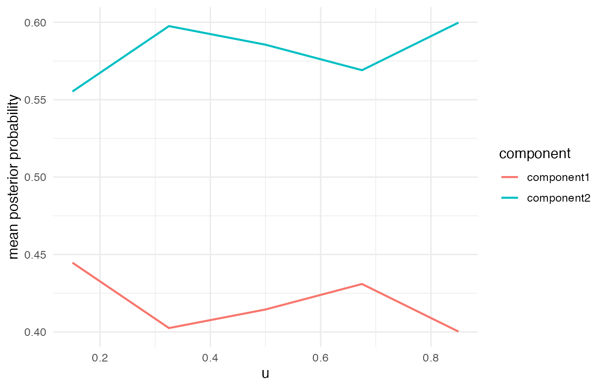

This tutorial shows the Negative-Binomial family in VCMoE. Expert coefficients are on the log mean count scale. Library size or size factors should enter through an expert-side offset such as offset(log_size_factor).
Simulate count data
set.seed(61)
sim <- simulate_vcmoe_negbin(
n = 320,
k = 2,
seed = 61,
separation = 3.0,
mean_count = 18,
scenario = "well_separated"
)
head(sim$data)
#> y u z1 x1 size_factor log_size_factor component
#> 1 41 0.002060810 0.38763954 -0.99764329 0.5894359 -0.5285892 2
#> 2 64 0.006113068 -1.86003760 -0.77784040 1.2244753 0.2025124 2
#> 3 55 0.006241603 -0.61665820 0.86469706 1.2212583 0.1998818 2
#> 4 28 0.013615126 0.24613859 0.29382958 1.5135793 0.4144772 1
#> 5 28 0.016265503 0.01320161 -0.62373067 1.1703616 0.1573127 2
#> 6 109 0.016968450 -1.64503391 0.03270223 1.2195169 0.1984548 2
summary(sim$data$y)
#> Min. 1st Qu. Median Mean 3rd Qu. Max.
#> 0.00 10.00 21.00 25.94 36.00 174.00Fit the model
The offset is part of the expert formula, not a separate argument. It controls library-size variation before interpreting the component-specific coefficients.
fit <- vcmoe_fit(
y ~ z1 + offset(log_size_factor) | x1,
data = sim$data,
u = "u",
family = "negative-binomial",
k = 2,
bandwidth = 0.60,
u_grid = seq(0.15, 0.85, length.out = 5),
control = list(
maxit = 120,
n_starts = 2,
seed = 62,
warn_ambiguous = FALSE,
ridge = 1e-4,
negbin_theta_ridge = 0.05,
negbin_theta_target = 8
)
)
fit
#> VCMoE fit
#> family: negative-binomial
#> components: 2
#> label alignment: global
#> kernel: epanechnikov (density_over_bandwidth)
#> local basis: (u - u0) / bandwidth
#> u scale: unit
#> grid points: 5
#> bandwidth: 0.6
#> converged grid points: 5/5Coefficients, dispersion, and predictions
coef(fit, "expert")[, , "z1"]
#> component
#> u component1 component2
#> 0.15 0.3768727 -0.3166905
#> 0.325 0.4670305 -0.3525040
#> 0.5 0.4607991 -0.3089095
#> 0.675 0.4988736 -0.2601763
#> 0.85 0.6409380 -0.1771268
coef(fit, "theta")
#> component
#> u component1 component2
#> 0.15 9.273331 9.230572
#> 0.325 9.198954 6.852272
#> 0.5 8.495498 6.196824
#> 0.675 7.599301 6.045190
#> 0.85 5.619365 6.925477Component-specific predictions and marginal means are on the count scale.
head(predict(fit, type = "component"))
#> component1 component2
#> [1,] 10.880916 18.53663
#> [2,] 9.689315 78.46625
#> [3,] 15.440423 52.78735
#> [4,] 26.489515 49.78070
#> [5,] 18.761313 41.43939
#> [6,] 10.464569 73.00452
head(predict(fit, type = "mean"))
#> [1] 15.70626 52.70921 37.43566 40.50575 32.86985 48.46449
head(predict(fit, type = "posterior"))
#> [,1] [,2]
#> [1,] 2.033240e-03 0.9979668
#> [2,] 2.451254e-10 1.0000000
#> [3,] 1.524823e-04 0.9998475
#> [4,] 6.489808e-01 0.3510192
#> [5,] 3.558165e-01 0.6441835
#> [6,] 1.518762e-19 1.0000000Diagnostics and plots
diagnostics <- vcmoe_diagnostics(fit)
diagnostics[, c("u", "converged", "ambiguous", "posterior_entropy", "effective_n")]
#> u converged ambiguous posterior_entropy effective_n
#> 0.15 0.150 TRUE FALSE 0.3333433 202.3687
#> 0.325 0.325 TRUE FALSE 0.3377879 255.9518
#> 0.5 0.500 TRUE FALSE 0.3096477 297.3595
#> 0.675 0.675 TRUE FALSE 0.2892309 261.0491
#> 0.85 0.850 TRUE FALSE 0.2710507 204.5169
plot_coefficients(fit, "expert")
plot_posterior(fit)